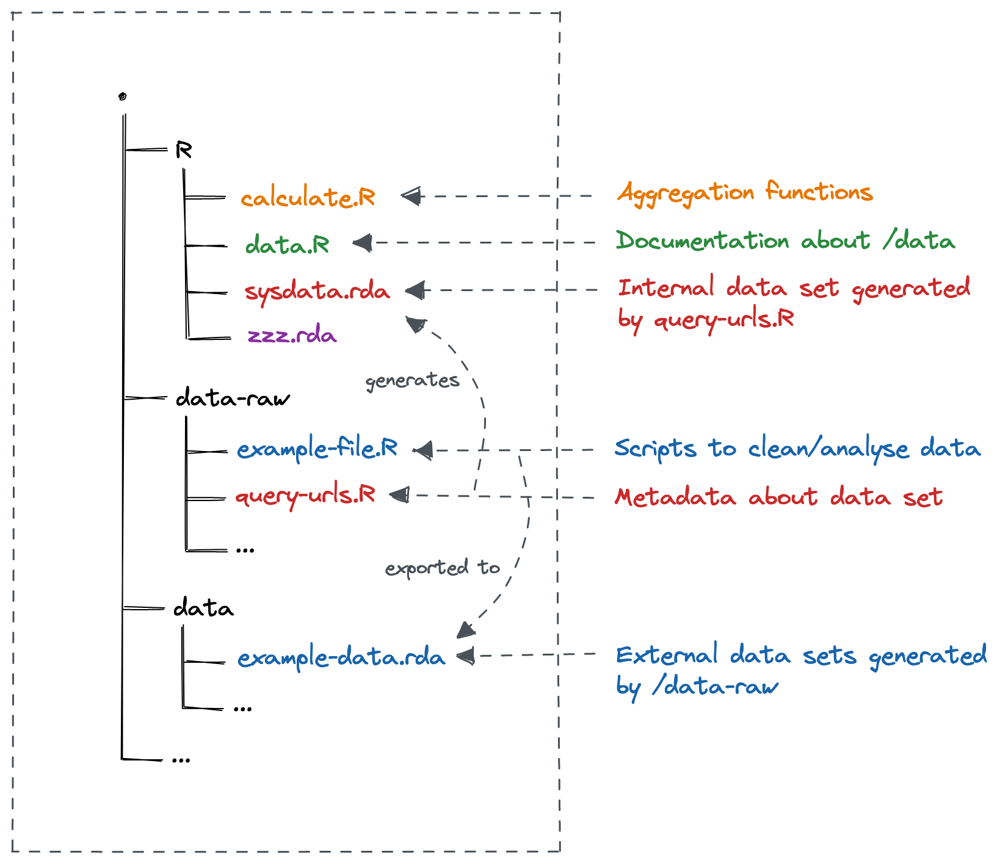
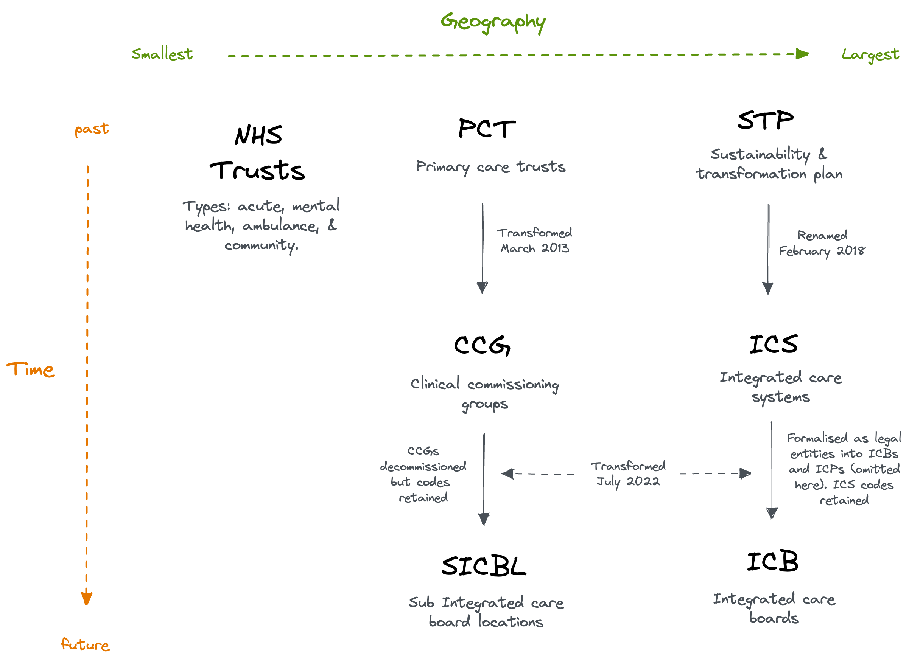
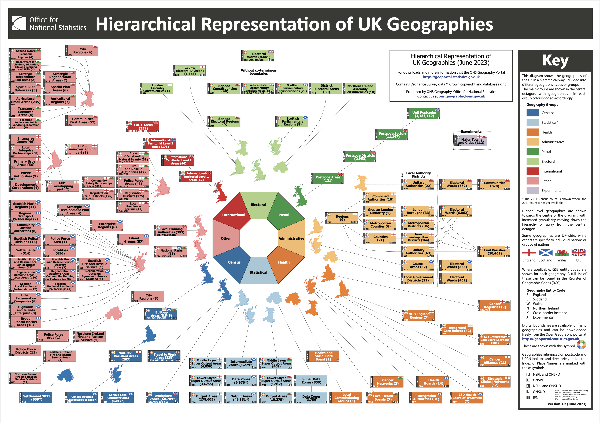
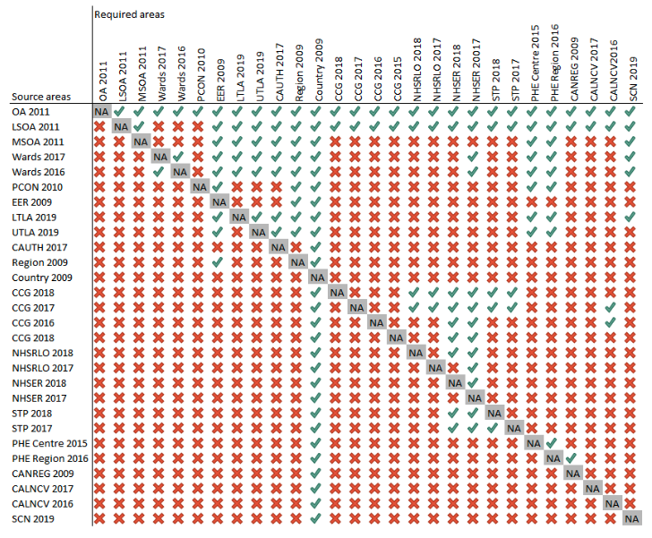

Overview
geographr is an R package for mapping UK geographies:
-
boundaries_*objects distribute boundaries (as simple feature objects) -
points_*objects distribute point geometries (as simple feature objects) -
lookup_*objects provide a set of lookup tables -
ruc_*objects provide a set of rural-urban classifications -
calculate_*functions solve common aggregation problems
Installation
You can install the development version from GitHub with:
# install.packages("devtools")
devtools::install_github("humaniverse/geographr")Development
To add data sets to the package:
- Update
data-raw/query-urls.R. Keep to alphabetical ordering. Make sure to build and export the tibble. - Add a file to
data-raw/. See other files for template.* - Document the data set in
R/data.R. Keep to alphabetical ordering. - Run
devtools::document()to export documentation. - Run
devtools::check()to check for errors/warnings/notes. - Update
LICENSEby adding the license of the new data set if not already covered.
* To reduce dataset file size, simplify polygons before exporting the dataset with rmapshaper::ms_simplify(), setting the keep argument to the lowest possible value before rows begin to drop out of the data frame.

UK geographies guide
Census
OA
Census output areas (OA) are the smallest unit for which census data are published - they were initially generated to support publication of 2001 Census outputs and contain at least 40 households and 100 persons, the target size being 125 households. They were built up from postcode blocks after the census data were available, with the intention of standardising population sizes, geographical shape and social homogeneity (in terms of dwelling types and housing tenure).
SOAs
Super Output Areas (SOAs) are a set of geographical areas developed following the 2001 census, initially to facilitate the calculation of the Indices of Deprivation 2004. The aim was to produce a set of areas of consistent size, whose boundaries would not change (unlike electoral wards). They are an aggregation of adjacent Output Areas with similar social characteristics. Lower Layer Super Output Areas (LSOAs) typically contain 4 to 6 OAs with a population of around 1500. Middle Layer Super Output Areas (MSOAs) on average have a population of 7,200.
Administrative
Electoral Wards
Electoral wards/divisions are the key building blocks of UK administrative geography. They are the spatial units used to elect local government councillors in metropolitan and non-metropolitan districts, unitary authorities and the London boroughs in England; unitary authorities in Wales; council areas in Scotland; and district council areas in Northern Ireland.
Local Authority Districts
English local authority districts (LAD) (both metropolitan and non-metropolitan), London boroughs and unitary authorities average around 23 electoral wards/divisions each, Northern Irish district council areas around 22, Scottish council areas around 11 and Welsh unitary authorities about 40. Population counts can vary substantially, even within a single LAD, but the national average is about 5,500. LA’s are split by Lower Tier Local Authorities (LTLA’s) and Upper Tier Local Authorities (UTLA’s). The difference between the two being LTLA’s use district councils and UTLA’s use county councils. The ONS refers to LTLA’s as LAD’s, and UTLA’s as Counties and Unitary Authorities.
Health
Integrated Care Systems
Originally coined sustainability and transformation plan (STP), then accountable care systems in 2017, they were renamed in February 2018 to Integrated Care Systems (ICS). They cover the whole of England and form part of the NHS Long Term Plan. In an ICS, NHS organisations, in partnership with local councils and others, take collective responsibility for managing resources, delivering NHS care, and improving the health of the population they serve. ICS are supposed to be bring together NHS trusts, Clinical Commissioning Groups and local authorities.
As part of the 2022 Health and Care Act, ICSs were formalised as legal entities into Integrated Care Boards (ICBs) and Integrated Care Partnernships (ICPs). See here and here for more information. ICBs retain the old ICS codes.
Clnical Comission Groups
Replacement for PCT’s. They work with patients and healthcare professionals and in partnership with local communities and local authorities. The aim of this is to give GPs and other clinicians the power to influence commissioning decisions for their patients. CCGs are groups of general practices (GPs) which come together in each area to commission the best services for their patients and population. CCGs are responsible for about 60% of the NHS budget, they commission most secondary care services. CCGs were decommisioned in July 2022 as part of the 2022 Health and Care Act. Sub Integrated Care Board Locations (SICBLs) have taken their place, retaining their codes.
Primary Care Networks
Introduce in January 2019. They provide the opportunity for GP practices to join networks, each with between 30,000 and 50,000 patients. The stated aim is to create fully integrated community-based health services. Most networks are geographically based and, between them, cover all practices within a clinical commissioning group (CCG) boundary. There are some exceptions where there were already well-functioning networks that are not entirely geographically based. Some networks cross CCG boundaries.
NHS Trusts
An NHS trust is an organisational unit within the National Health Service in England and Wales, generally serving either a geographical area or a specialised function (such as an ambulance service). As of April 2020 there are altogether 217 trusts.
Primary Care Trusts
Primary care trusts (PCTs) were part of the National Health Service in England from 2001 to 2013. They were abolished on 31 March 2013 as part of the Health and Social Care Act 2012, with their work taken over by clinical commissioning groups.
Health Boards
Scotland: Delivery of frontline healthcare services in Scotland are the responsibility of 14 regional National Health Service (NHS) Boards that report to the Scottish Government. Current boundaries of NHS Health Boards in Scotland are defined by National Health Service (Variation of Areas of Health Boards) (Scotland) Order 2013 (SSI 2013/347), which came into force on April 1st 2014, and replaces the previous definition based upon the former Regions and Districts of the Local Government (Scotland) Act 1973. This change was made in order to re-align Health Boards with the combined area of each Local Authority that they serve. Subsequent changes to Local Authorities will result in corresponding amendments to Health Board boundaries in order to maintain alignment.
Wales: In 2003 Wales established 22 health boards that were coterminous with their 22 local authority areas. This has since been reformed to seven areas following the One Wales Strategy/Social Services and Well-being (Wales) Act 2014. These new health boards have mixed coterminosity with local authority areas.
Resources:
Diagram of England health geographies:

- Hierarchical Representation of UK Statistical Geographies:

- Mappings of coterminous geographies from PHE’s Technical Aggregation Guide:

Contributing
To contribute to this project, please follow GitHub Flow when submitting changes.
Please note that this project is released with a Contributor Code of Conduct. By participating in this project you agree to abide by its terms.